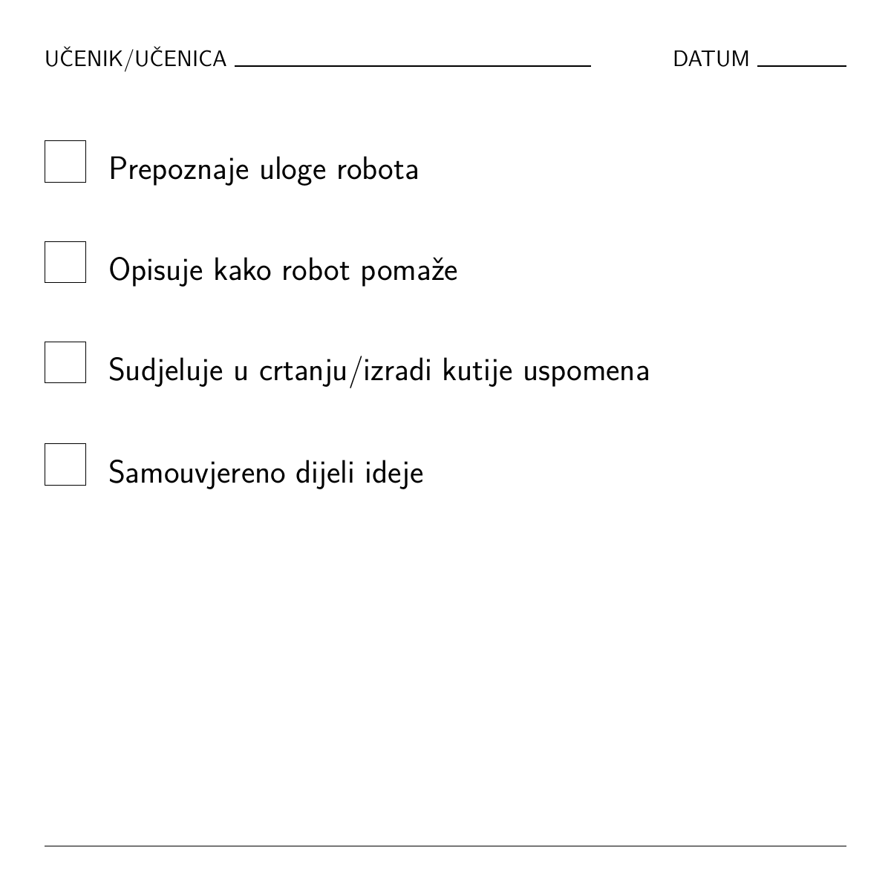

Kako umjetna inteligencija uči i rješava probleme
U ovoj će radionici djeca od 4 do 7 godina istraživati svijet robota i umjetne inteligencije. Naučit će da su strojevi korisni alati, ali da im trebaju ljudi koji će ih poučavati i davati im upute.
Resursi i preuzimanja
Preuzmite PDF verzije ovog scenarija ili povezane priloge.
Radni dokumenti za uređivanje
Ove izvorne datoteke za uređivanje dostupne su kao radni dokumenti za nastavnike.
Ciljna skupina: 4 – 7 godina
Trajanje aktivnosti: 2,5 – 3 sata (modularno)
Glavni ciljevi učenja:
- Razumijevanje umjetne inteligencije: Prepoznati umjetnu inteligenciju kao koristan alat, a ne čaroliju.
- Čovjek i stroj: Naučiti da roboti trebaju ljude koji će im pomoći učiti.
- Znatiželja: Istražiti stvarne primjere pomoćnika koji koriste umjetnu inteligenciju (usisavači, pametni zvučnici).
- Kreativnost: Zamisliti i nacrtati vlastitog robota pomoćnika.
Ishodi učenja
Učenici će moći:
ZNANJE I RAZUMIJEVANJE:
- Početi razumijevati što je robot ili pomoćnik s umjetnom inteligencijom.
- Naučiti da umjetna inteligencija može pomoći u zadacima, ali i dalje treba ljude.
- Istražiti stvarne primjere korisne primjene umjetne inteligencije.
VJEŠTINE I SPOSOBNOSTI:
- Pripovijedanje i razgovor o tehnologiji.
- Vođena igra uloga za razumijevanje načina na koji roboti slijede upute.
- Crtanje i kreativnost za izražavanje ideja.
STAVOVI I VRIJEDNOSTI:
- Razvijati znatiželju o tehnologiji.
- Promišljati o razlikama između ljudi i strojeva.
- Prepoznati umjetnu inteligenciju kao alat koji treba odgovorno koristiti.
Europska dimenzija / povezanost s programom Erasmus+
- Rana digitalna pismenost: smislen uvod u tehnološke pojmove.
- Kritičko mišljenje: Poticati djecu da se zapitaju: „Može li robot to napraviti?”
- Uključivost: Koristiti poznate primjere kako bi tehnologija bila pristupačna svoj djeci.
1. Resursi i alati
Potrebni materijali:
- Lutka ili robot igračka.
- Kartice za ispis: „Robot pogađa točno/netočno”, „Ljudi znaju bolje”.
- Papir za crtanje i olovke.
- Video: Roboti u svakodnevnom životu.
- Kontrolna lista za vrednovanje (vidi u nastavku).
Korisne poveznice:
Materijali za podršku nastavi:
- Koristite jednostavnu rubriku za vrednovanje, lutku ili robota te Padlet ili drugu ploču za prikupljanje završnih osvrta djece.
2. Metode rada
- Pripovijedanje: „Robot koji je pogriješio”.
- Vođena igra uloga: Odigravanje zadataka robota.
- Crtanje i kreativnost: Osmišljavanje robota pomoćnika.
- Zajednički osvrt: Razgovor u krugu.
Pregled aktivnosti
| Faza | Trajanje | Aktivnost | Opis |
|---|---|---|---|
| Uvod | 20 min | Pričanje priče | „Robot koji je pogriješio”: Razgovarati o tome zašto je robot pogriješio (npr. stavio cipele u hladnjak) i kako mu ljudi pomažu. |
| Istraživanje | 20 – 30 min | Stvarni pomoćnici s umjetnom inteligencijom | Video i glasovanje: Gledati videosnimke robota (usisavači, dostava). Glasovati: „Može li robot to napraviti sam ili treba čovjeka?” |
| Kreativni rad | 30 – 40 min | Robot pomoćnik i crtanje | Igra razvrstavanja: Je li ovaj zadatak za robota, čovjeka ili oboje? Crtanje: Osmislite vlastitog robota pomoćnika. |
| Osvrt | 20 min | Razgovor u krugu | Podijeliti crteže. Razgovarati: „Što roboti mogu napraviti? Što ljudi rade najbolje?” |
3. Uvod i motivacija
Priča: Robot koji je pogriješio
Cilj: Potaknuti znatiželju i pokazati da roboti trebaju ljudsku pomoć.
- Uvodni poticaj: Nastavnik predstavlja lutku robota koji želi pomoći, ali se zbuni.
- Priča: Robot pokušava očistiti kuhinju, ali umjesto sapuna koristi šampon! Pribor za jelo stavlja u zamrzivač, a mlijeko u ormarić.
- Razgovor: „Zašto se robot zbunio?” „Kako ljudi znaju bolje?”
4. Istraživanje i učenje
Istraživanje stvarnih pomoćnika s umjetnom inteligencijom
Video: Pogledajte „SciShow Kids: Robots Helping Humans” (ili sličan video).
Razgovor:
- „Jeste li vidjeli robotski usisavač? Može li pronaći vaše izgubljene čarape?” (Ne, on samo čisti.)
- „Može li vas pametni zvučnik zagrliti?” (Ne, može samo puštati glazbu.)
Aktivnost: Pokažite kartice s različitim zadacima. Djeca glasuju palcem gore/dolje: „Može li robot to dobro napraviti?”
5. Kreativna primjena
Aktivnost: Robot pomoćnik ili ljudski zadatak?
Igra razvrstavanja: Nastavnik pokazuje kartice sa zadacima (npr. „Pospremiti sobu”, „Zagrliti”, „Naslikati sliku”). Djeca odlaze u kutove prostorije označene Robot, Čovjek, ili Oboje.
Zadatak crtanja: Osmislite svog robota
Djeca crtaju robota koji nekome pomaže napraviti nešto korisno.
- Poticaj: „Što vaš robot dobro radi?” (Npr. nosi teške stvari.)
- Poticaj: „U čemu treba pomoć?” (Npr. znati kamo treba ići.)
6. Osvrt i vrednovanje
Razgovor u krugu
Djeca dijele svoje crteže. Skupina izrađuje „kutiju uspomena” i dodaje crteže o tome kako im je umjetna inteligencija danas pomogla.
Lista za procjenu
Nastavnici mogu koristiti ovu jednostavnu listu za praćenje razumijevanja:


Ovo djelo dostupno je pod licencijom Međunarodna licencija Creative Commons Imenovanje 4.0.